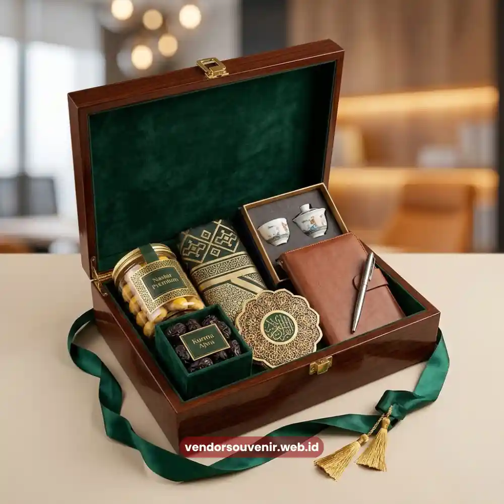

Daftar Isi
Hampers Lebaran perusahaan adalah bingkisan hari raya yang diberikan perusahaan kepada klien, mitra bisnis, atau karyawan sebagai bentuk apresiasi menjelang atau saat momen Idulfitri.
Momen ini sering dimanfaatkan perusahaan untuk mempererat hubungan bisnis sekaligus menunjukkan perhatian terhadap relasi kerja sama sepanjang tahun.
Pemilihan isi dan kemasan yang tepat dapat memperkuat kesan positif perusahaan di mata penerima.
- Hampers Lebaran perusahaan mempererat hubungan dengan klien dan mitra bisnis.
- Momen hari raya menjadi kesempatan strategis menunjukkan apresiasi perusahaan.
- Isi hampers sebaiknya mencerminkan kesan hangat dan bernuansa perayaan.
- Kemasan elegan turut memperkuat citra profesional perusahaan.
- Vendor Souvenir siap membantu persiapan hampers Lebaran sesuai kebutuhan korporat.
Mengapa Momen Lebaran Penting bagi Hubungan Bisnis Perusahaan?
Momen Lebaran menjadi salah satu waktu yang paling banyak dimanfaatkan perusahaan untuk mempererat relasi bisnis.
Hal ini dikarenakan secara kultural momen ini identik dengan silaturahmi dan saling berbagi di masyarakat.
Pemberian hampers pada periode ini dianggap wajar dan diterima secara positif oleh sebagian besar kalangan korporat maupun klien perorangan.
Selain aspek budaya, momen ini juga menjadi peluang bagi perusahaan untuk menegaskan kembali eksistensi brand di benak klien.
Penyampaian menjelang penutupan kuartal atau pertengahan tahun memastikan hubungan bisnis tetap terjaga sepanjang periode berikutnya.
Apa yang Membedakan Hampers Lebaran Perusahaan dengan Hampers Biasa?
Hampers Lebaran perusahaan umumnya memiliki nuansa visual yang lebih kental dengan tema hari raya, baik dari segi warna maupun desain.
Pemilihan produk di dalamnya juga lebih disesuaikan untuk dapat dinikmati bersama keluarga pada saat hari perayaan tiba.
Selain itu, hampers jenis ini biasanya diproduksi dalam jumlah lebih besar karena ditujukan untuk banyak klien dan mitra sekaligus.
Distribusi ini dilakukan dalam periode waktu yang relatif singkat menjelang hari raya Idulfitri.
Aspek lain yang membedakan adalah tingkat urgensi produksi karena tingginya permintaan pasar.
Perusahaan disarankan mempersiapkan pemesanan lebih awal agar kualitas dan ketepatan waktu pengiriman tetap terjaga.

Parcel Lebaran Korporat
Apa Saja Pertimbangan Isi Hampers Lebaran yang Sesuai untuk Klien?
Produk dengan Nuansa Perayaan
Isi hampers Lebaran umumnya mengedepankan produk yang identik dengan momen perayaan dan kebersamaan.
Hal ini mencakup makanan khas hari raya, camilan premium, atau minuman istimewa yang dapat dinikmati bersama keluarga penerima.
Kemasan dengan Sentuhan Elegan
Kemasan menjadi elemen penting dalam hampers Lebaran karena mencerminkan kesan pertama sebelum penerima melihat isinya.
Warna, bahan, dan tata letak kemasan sebaiknya dipilih agar tampil elegan namun tetap merepresentasikan identitas perusahaan.
Penyesuaian Jumlah dan Skala Distribusi
Karena hampers Lebaran biasanya dikirim ke banyak penerima sekaligus, perusahaan perlu merencanakan skalabilitas dengan baik.
Pertimbangkan efisiensi produksi dan distribusi tanpa mengurangi kualitas pada setiap paket yang diterima oleh klien.
Kapan Waktu Ideal Mempersiapkan Hampers Lebaran Perusahaan?
Persiapan hampers Lebaran idealnya dimulai jauh sebelum bulan puasa berakhir.
Mengingat tingginya permintaan pada periode tersebut, pesanan mendadak dapat memperpanjang waktu produksi atau membatasi opsi produk.
Persiapan lebih awal memberi ruang lebih luas bagi perusahaan untuk melakukan penyesuaian desain.
Perusahaan juga bisa merevisi isi pesanan sebelum memasuki masa produksi puncak di vendor pembuatnya.

Solusi Gift Set dari Vendor Terpercaya
Kesimpulan
Hampers Lebaran perusahaan menjadi sarana strategis untuk mempererat hubungan dengan klien dan mitra bisnis melalui momen yang penuh makna.
Pemilihan isi bernuansa perayaan dan kemasan yang elegan akan memperkuat kesan profesional perusahaan.
Secara bersamaan, hadiah ini turut menonjolkan kehangatan perusahaan di mata para penerima.
Persiapkan hampers Lebaran perusahaan Anda lebih awal agar mendapatkan hasil terbaik yang maksimal.
Hubungi Vendor Souvenir sekarang untuk konsultasi gratis dan penawaran khusus menjelang datangnya hari raya.
Butuh Bantuan Merancang Hampers Lebaran?
Tim ahli kami siap membantu Anda menyusun paket hadiah eksklusif yang menarik.
Pilihan barang akan disesuaikan dengan ketersediaan budget dan kebutuhan Anda.
Seluruh desain kemasan akan kami selaraskan dengan identitas visual perusahaan Anda.
Dapatkan penawaran harga terbaik untuk pesanan massal!
FAQ
Apa itu hampers Lebaran perusahaan?
Hampers Lebaran perusahaan adalah bingkisan hari raya yang diberikan kepada klien, mitra bisnis, atau karyawan sebagai bentuk apresiasi menjelang atau saat Idulfitri.
Kapan sebaiknya perusahaan mulai memesan hampers Lebaran?
Sebaiknya dimulai jauh sebelum bulan puasa berakhir mengingat tingginya permintaan pada periode tersebut dapat memperpanjang waktu produksi.
Apa yang membuat hampers Lebaran berbeda dari hampers biasa?
Hampers Lebaran umumnya memiliki nuansa visual bertema hari raya dan diproduksi dalam jumlah lebih besar untuk banyak penerima sekaligus.
Maroon Souvenir
Partner Corporate Gift terpercaya di Indonesia. Berpengalaman melayani ratusan perusahaan sejak 2018.
Lihat Portofolio Kami